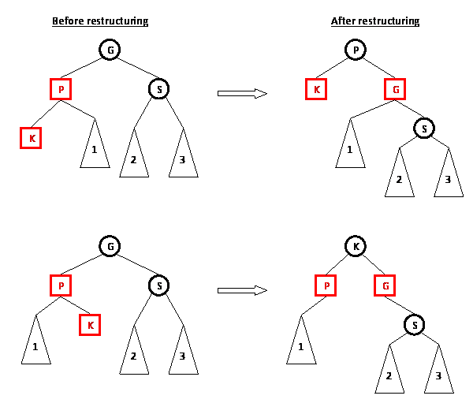

The SSLTables algorithm uses a balanced tree algorithm.
A tree with n nodes is said to be balanced if it has a height of at most log(n).

There are certain algorithms that gaurantee that the tree will be balanced no matter what order of inserts, updates, and deletes you use.
These use node rotations and are typically taught in an intro to data structures class:
SSLTables also needs segmentation.
Instead of using one log file, SSLTables has multiple log files ("segments").
Compaction compresses these many log segments into a single log segment.
The full SSLTables write algorithm:
- When a write comes in, store it in an in-memory balanced tree (the "memtable").
- When the memtable exceeds a certain size, write it to disk as an (ordered) log segment.
- When compaction kicks off, simultaneously iterate through all of the log files in sorted, last-write-wins order. Write the "winning" record to the new log file.
The full SSLTables read algorithm:
-
When a read comes in, check the memtable for the data.
Because the memtable is a balanced tree, it can be searched inO(log n)time. -
If it's not there, check the most recent log segment.
Because the log segment is sorted, it can be searched inO(log n)time. - If it's not there either, check the second most recent log segment.
- Repeat you find it.
Performance considerations:
-
Append-only logs offers
O(1)writes, SSLTables offersO(log n)writes. -
Append-only logs offer
O(1)reads, subject to the restriction that the hash map fits in memory. Otherwise read performance degrades toO(n). -
SSLTables offers
O(log n)writes with no restrictions on database size.
This is because the log files are in sorted order! If all keys are the same size, log files can be binary searched. If keys can be different sizes, a sparse index can be used to achieve the same (amortized) time. -
Append-only logs have
O(n)range queries (e.g. "find all words between 'cat' and 'cop'"). SSLTables haveO(log n)range queries.